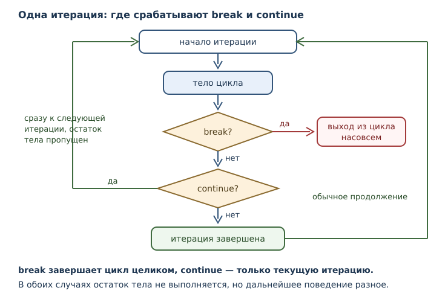
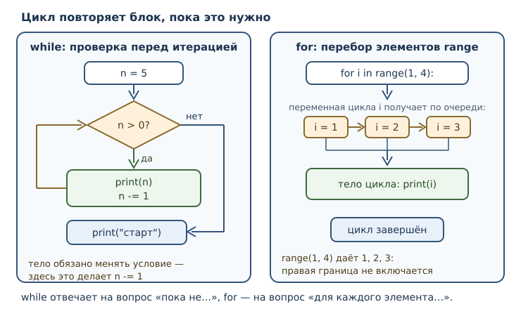

Циклы: while и for
Повторение действий, range, break и continue, типичные ошибки циклов.
В этой главе
Условия научили программу выбирать, но не повторять. Если нужно обработать сто заказов, написать сто одинаковых блоков — плохая идея: такой код невозможно читать, а изменить в нём одно число придётся сто раз. Нужен механизм, который описывает повторение один раз и заставляет компьютер выполнять его столько раз, сколько требуется.
Такой механизм называется циклом. В Python есть два вида циклов, и они решают
разные задачи. Цикл while повторяет действия, пока условие истинно: он удобен,
когда количество повторений заранее неизвестно и определяется ходом
вычислений. Цикл for проходит по готовому набору значений: он удобен, когда
нужно обработать каждый элемент последовательности. В этой главе появятся оба,
а также инструкции break и continue, которые управляют ходом цикла изнутри.
6.1 Что вы сможете после этой главы
К концу главы вы будете уметь следующее.
- писать циклы
whileс корректным условием завершения; - проходить циклом
forпо числам отrangeи по другим наборам значений; - объяснять, почему
range(5)даёт числа от 0 до 4, а не от 1 до 5; - досрочно завершать цикл и пропускать часть итерации;
- отличать бесконечный цикл по ошибке от намеренного;
- выбирать подходящий вид цикла, а не тот, который первым вспомнился.
6.2 Цикл while
Цикл while повторяет блок, пока его условие истинно. Условие проверяется перед каждой итерацией — одним проходом тела цикла. Как только условие становится ложным, выполнение переходит к первой инструкции после цикла.
n = 5
while n > 0:
print(n)
n -= 1
print("старт")
5
4
3
2
1
старт
Разберём по шагам, потому что в цикле важна именно динамика:
n = 5, условие5 > 0истинно — печатается5, затемnстановится равным4.- Условие
4 > 0истинно — печатается4,nстановится3. - Так продолжается до
n = 1: печатается1,nстановится0. - Условие
0 > 0ложно — цикл завершается, и исполняется строка после него.
Ключевое требование к циклу while: тело должно влиять на условие. В
примере это делает n -= 1. Если убрать эту строку, условие останется истинным
навсегда, и программа зависнет — получится бесконечный цикл, о котором ниже.
Второй типичный образец — накопление результата. Имя-накопитель создаётся до цикла, обновляется внутри и читается после:
total = 0
i = 1
while i <= 10:
total += i
i += 1
print(total)
55
Здесь total — сумма чисел от 1 до 10, а i — счётчик, который одновременно
служит условием продолжения. Две роли разделены: total хранит результат, i
управляет повтором. Путать их нельзя: если обновлять только total, цикл не
завершится.
6.3 Цикл for и range
Цикл for по очереди присваивает переменной цикла элементы итерируемого объекта и исполняет тело для каждого элемента. Итерируемый объект — объект, по которому можно пройти таким образом: он умеет выдавать свои элементы по одному.
Самый частый источник элементов — range.
for i in range(5):
print(i)
0
1
2
3
4
range — компактная последовательность целых чисел: она хранит только границы и вычисляет число по индексу. У неё три формы записи:
| Запись | Что даёт | Пример |
|---|---|---|
range(стоп) |
от 0 до стоп - 1 |
range(5) → 0, 1, 2, 3, 4 |
range(старт, стоп) |
от старт до стоп - 1 |
range(2, 6) → 2, 3, 4, 5 |
range(старт, стоп, шаг) |
с шагом, может быть отрицательным | range(10, 0, -3) → 10, 7, 4, 1 |
Проверим вторую и третью формы:
for i in range(2, 6):
print(i)
2
3
4
5
for i in range(10, 0, -3):
print(i)
10
7
4
1
Правая граница в range не включается. Это самая частая причина ошибок на
единицу: чтобы получить числа от 1 до 10, нужен range(1, 11), а не
range(1, 10).
Два крайних случая стоит знать заранее. Нулевой шаг запрещён: range(1, 10, 0)
поднимает ошибку ValueError: range() arg 3 must not be zero, потому что
непонятно, как двигаться. А шаг, уводящий от границы, даёт пустой диапазон:
range(0, 5, -1) не содержит ни одного числа, и цикл не выполнится ни разу.
for i in range(1, 10, 0):
print(i)
ValueError: range() arg 3 must not be zero
total = 0
for i in range(1, 11):
total += i
print(total)
55
Слово «ленивый» означает, что range не хранит все числа в памяти: он
вычисляет очередное число, когда оно понадобится. Поэтому range(1_000_000)
занимает считанные байты, а не мегабайты. Убедиться, что это особый объект, а
не список чисел, можно так:
print(range(5))
print(range(2, 10, 2))
print(range(5) == range(0, 5))
range(0, 5)
range(2, 10, 2)
True
Последняя строка показывает, что range умеет сравниваться по своему
содержимому: range(5) и range(0, 5) описывают одну и ту же
последовательность.
Переменная цикла после завершения сохраняет последнее значение. Это не ошибка, но и не гарантия осмысленности:
for i in range(3):
print("итерация", i)
print("последнее значение переменной цикла:", i)
итерация 0
итерация 1
итерация 2
последнее значение переменной цикла: 2
Если цикл не выполнился ни разу, имя останется в том виде, в каком было до цикла, — или его не будет вовсе, если оно раньше не встречалось.
6.4 Перебор не только чисел
range — удобный, но не единственный итерируемый объект. Например, строку
можно перебрать посимвольно:
word = "кот"
for ch in word:
print(ch)
к
о
т
Тот же приём работает с любой строкой: for не интересует, что именно за
объект перед ним, — ему достаточно, чтобы объект умел выдавать элементы по
очереди. Коллекции из части 3 тоже окажутся итерируемыми, и цикл for станет
основным способом их обработки. Подробнее о механизме, который стоит за
перебором, — в главе 20.
6.5 Инструкции break и continue
Иногда нужно прервать цикл раньше, чем закончится его условие, или пропустить часть тела. Для этого есть две инструкции.
break немедленно завершает ближайший цикл: управление переходит к первой инструкции после него, остальные итерации не выполняются.
for n in range(1, 20):
if n * n > 50:
break
print(n)
print("первое число с квадратом больше 50:", n)
1
2
3
4
5
6
7
первое число с квадратом больше 50: 8
Цикл мог бы идти до 19, но как только встретилось 8, условие 64 > 50
оказалось истинным, и break остановил перебор. Без break пришлось бы
перебирать весь диапазон и проверять результат отдельно.
continue не завершает цикл, а переходит к следующей итерации, пропуская остаток тела.
for i in range(1, 11):
if i % 2:
continue
print(i)
2
4
6
8
10
Условие i % 2 истинно для нечётных чисел, поэтому для них continue
перескакивает печать. Чётные числа доходят до print и печатаются.
Разница между инструкциями принципиальна:
| Инструкция | Что делает | Что происходит с циклом |
|---|---|---|
break |
выходит из цикла | цикл завершён |
continue |
пропускает остаток итерации | цикл продолжается |
Типичная ошибка — написать break там, где нужен continue. Тогда после
первого же подходящего элемента цикл закончится, и обработается только он.

6.6 Ветвь else цикла
У циклов в Python есть особенность, которой нет во многих языках: после тела
можно поставить else. Ветвь else цикла исполняется, только если цикл
завершился без break. Если цикл прерван инструкцией break, ветвь else
пропускается.
Удобнее всего это работает при поиске. Проверим, простое ли число: перебираем возможные делители и прерываемся, как только нашли хоть один.
n = 49
if n < 2:
print("не простое")
else:
for d in range(2, n):
if n % d == 0:
print("делитель", d)
break
else:
print("простое число")
делитель 7
Для 49 делитель нашёлся, break сработал, и ветвь else пропущена. Теперь
возьмём число без делителей:
n = 47
if n < 2:
print("не простое")
else:
for d in range(2, n):
if n % d == 0:
print("делитель", d)
break
else:
print("простое число")
простое число
Проверка n < 2 нужна отдельно: единица и ноль — не простые числа, а
range(2, n) для них пуст, поэтому без этой проверки ветвь else сразу
объявила бы число простым.
Цикл прошёл весь диапазон и не прервался — значит, делителей нет. Без else
пришлось бы заводить отдельное имя-признак, ставить его в False, менять в
теле и проверять после цикла. Ветвь else убирает эту лишнюю механику, а
главное — делает намерение явным: «если поиск не прервался».
Ветвь else работает и с while:
n = 0
while n < 3:
n += 1
else:
print("цикл завершился без break")
цикл завершился без break
6.7 Вложенные циклы
Цикл может стоять внутри другого цикла. Внешний цикл отвечает за строки, внутренний — за элементы внутри строки. Классический пример — таблица умножения:
for i in range(1, 3):
for j in range(1, 4):
print(f"{i * j:3}", end="")
print()
1 2 3
2 4 6
Внутренний цикл выполняется целиком на каждой итерации внешнего: для i = 1
три числа, затем для i = 2 ещё три. Общее число итераций тела внутреннего
цикла равно произведению длин диапазонов: 2 * 3 = 6.
Важно помнить: break действует только на ближайший цикл. Внутренний
break не выходит из внешнего.
for i in range(1, 4):
for j in range(1, 4):
if j == 2:
break
print(i, j)
1 1
2 1
3 1
Внутренний цикл каждый раз прерывается на j = 2, но внешний продолжается с
того же места: break не начинает внешний цикл заново, а переходит к его
следующей итерации. Поэтому получаем по одной паре на каждое значение i.
Если нужен выход из обоих циклов, придётся либо проверять условие во внешнем
цикле, либо вынести поиск в функцию — этот приём появится в главе 7.
6.8 Бесконечный цикл
Бесконечный цикл — цикл, условие которого никогда не становится ложным. Чаще всего это дефект: забыли обновить счётчик, перепутали знак сравнения, поставили неверное условие. Программа в таком состоянии не завершается и не реагирует на ввод.
Но бесконечный цикл бывает и намеренным. Схема while True с break внутри —
стандартный приём для программ, которые работают до определённого события:
пока пользователь не выберет выход, пока не поступит нужный сигнал.
count = 0
while True:
count += 1
if count > 3:
break
print(count)
print("вышли при count =", count)
1
2
3
вышли при count = 4
Условие True истинно всегда, поэтому цикл завершается только через break.
Такой код честнее, чем while count <= 3: он прямо говорит «выход здесь», и
искать условие выхода не нужно по всему телу.
Если программа всё же зависла, её прерывают с клавиатуры: в терминале это
обычно Ctrl+C. Это действие оболочки и среды, а не часть языка, но знать о
нём полезно.
6.9 Как выбрать цикл
Оба цикла умеют повторять, но устроены по-разному. Сравним схемы: у while
управляет условие, и после тела управление возвращается к его проверке; у for
элементы берутся из готового набора, и цикл заканчивается, когда набор исчерпан.

| Вопрос | while |
for |
|---|---|---|
| Сколько повторений? | неизвестно заранее | известно или задано набором |
| Что управляет повтором? | условие | элементы итерируемого объекта |
| Риск бесконечности | высокий: условие можно не изменить | низкий: набор конечен |
| Типичная задача | «пока не…», подсчёт шагов | обработка каждого элемента, обход диапазона |
Полезно проследить цикл вручную на бумаге: выписать строку заголовка, затем две-три итерации со значениями всех имён. Почти все ошибки в циклах видны именно на третьей итерации, а не на первой.
Практическое правило: если задачу можно сформулировать как «для каждого
элемента из набора сделай…», берите for. Если как «повторяй, пока не
выполнится условие», берите while. Когда подходят оба варианта, for обычно
безопаснее: он не может зациклиться из-за забытого обновления счётчика.
6.10 Собираем вместе
Разберём задачу, в которой while уместнее for: сколько шагов нужно, чтобы
привести число к единице по правилу «чётное делим пополам, нечётное умножаем
на три и прибавляем единицу». Заранее число шагов неизвестно — идеальный
случай для цикла с условием.
n = 6
steps = 0
while n != 1:
if n % 2 == 0:
n //= 2
else:
n = 3 * n + 1
steps += 1
print(steps)
8
Проследим: 6 → 3 → 10 → 5 → 16 → 8 → 4 → 2 → 1. Каждая стрелка — одна
итерация, всего их восемь. Условие n != 1 проверяется перед каждой
итерацией, а тело всегда меняет n, поэтому цикл не может крутиться на месте.
Достигает ли этот процесс единицы для любого начального числа — открытый вопрос
математики, известный как гипотеза Коллатца; для конкретного числа ответ даёт
именно такой цикл.
Второй пример — сумма цифр числа. Здесь while работает как «разбор числа по
одной цифре справа налево»:
n = 1234
total = 0
while n > 0:
total += n % 10
n //= 10
print(total)
10
n % 10 даёт последнюю цифру, n //= 10 отбрасывает её. Цикл идёт, пока в
числе остались цифры. Тот же результат можно получить через строки, но
арифметический путь короче и не требует преобразований типов.
6.11 Типичные ошибки
- Забыть изменить условие. Если в теле
whileсчётчик не меняется, программа зависнет. Проверяйте: что именно делает условие ложным? - Ошибка на единицу в
range.range(1, 10)даёт числа от 1 до 9. Правая граница не включается. - Ожидать от
rangeсписок.print(range(5))печатаетrange(0, 5), а не[0, 1, 2, 3, 4]. Это разные вещи. - Путать
breakиcontinue.breakзавершает цикл,continueпропускает остаток текущей итерации. - Рассчитывать, что
breakвыйдет из всех циклов. Он действует только на ближайший. - Ожидать, что
elseвыполнится послеbreak. Ветвьelseцикла — это «не былоbreak», а не «после цикла». - Менять условие в неправильном направлении.
while n > 0сn += 1уводит от завершения, а не к нему. - Считать, что тело цикла выполнится хотя бы раз.
whileпроверяет условие до первой итерации; при ложном условии тело не выполнится вовсе.
6.12 Упражнения
1. Прогнозирование
Что выведет программа? Запишите ответ до запуска.
i = 0
while i < 3:
print(i)
i += 1
print("конец")
2. Сумма диапазона
Напишите цикл, который считает сумму чисел от 1 до 100. Проверьте результат:
должно получиться 5050.
3. Ошибка на единицу
Автор хотел напечатать числа от 1 до 5, но написал for i in range(1, 5).
Что получится? Исправьте программу и объясните правило правой границы.
4. Обратный отсчёт
Напишите цикл, который печатает числа от 10 до 1, а затем строку пуск.
Используйте range с отрицательным шагом.
5. Степени двойки
Напечатайте степени двойки от 2 ** 1 до 2 ** 10, каждую с новой строки.
Не используйте вручную записанные числа: вычислите их в цикле.
6. Исправление бесконечного цикла
Программа зависает:
n = 10
while n > 0:
print(n)
Объясните причину и исправьте код так, чтобы он напечатал числа от 10 до 1.
7. Первый делитель
Напишите программу, которая находит наименьший делитель числа n (больше
единицы) и печатает его. Используйте break. Проверьте на n = 91 и
n = 97.
8. Пропуск значений
Напечатайте все числа от 1 до 30, которые делятся на 3, но не делятся на 5.
Используйте continue хотя бы один раз.
9. Простое число
Напишите программу с ветвью else цикла, которая печатает простое или
составное для числа n. Проверьте на 49, 47 и 2.
10. Мини-задача: таблица
Напечатайте таблицу умножения от 1 до 5 в виде строк, где числа выровнены по ширине три символа:
1 2 3 4 5
2 4 6 8 10
3 6 9 12 15
4 8 12 16 20
5 10 15 20 25
Используйте вложенные циклы, f"{...:3}" и end="".
6.13 Проверка понимания
- Чем
whileотличается отforпо способу управления повтором? - Почему
range(5)даёт 0, 1, 2, 3, 4, а не 1, 2, 3, 4, 5? - Что такое итерация и чем она отличается от цикла?
- Чем
breakотличается отcontinue? - Когда исполняется ветвь
elseцикла? - Почему
breakво внутреннем цикле не завершает внешний? - Назовите две причины появления бесконечного цикла.
- Почему
range(1_000_000)не занимает много памяти?
6.14 Что дальше
Программы научились повторять действия, но по-прежнему состоят из одного длинного списка инструкций. Когда код растёт, его нужно делить на части с понятными именами. Дальше появятся функции: они позволят дать имя целому фрагменту работы, вызывать его многократно и возвращать результат.